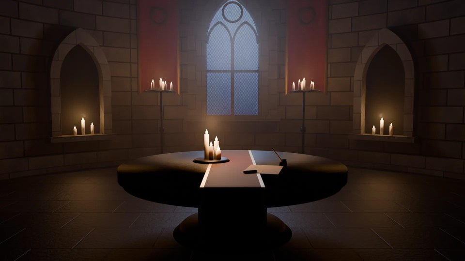
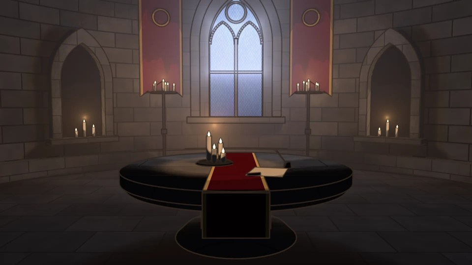
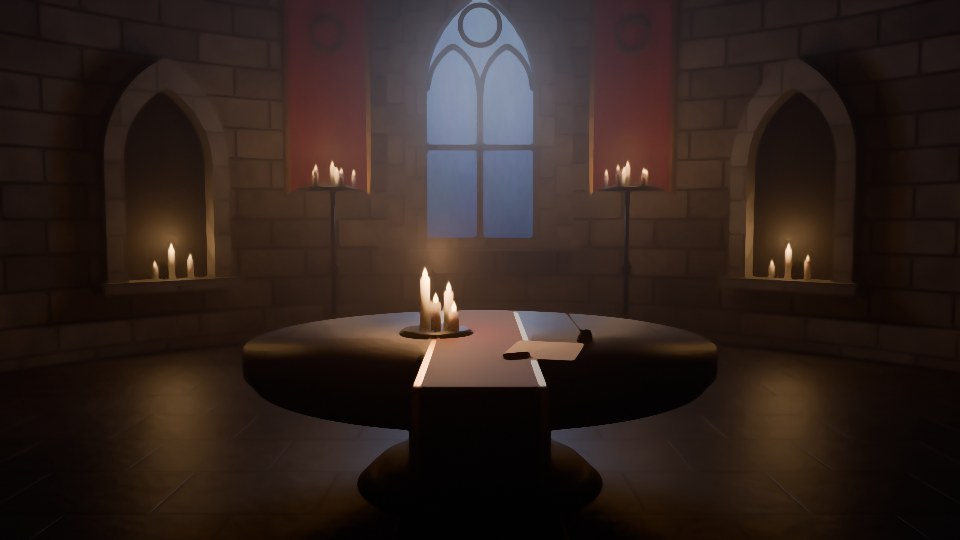
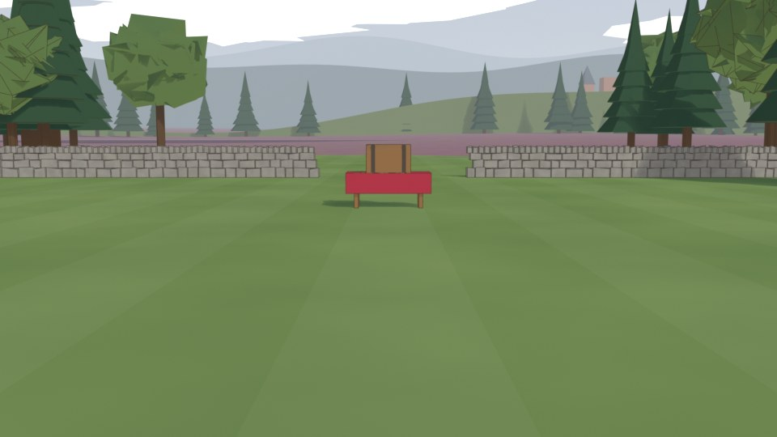
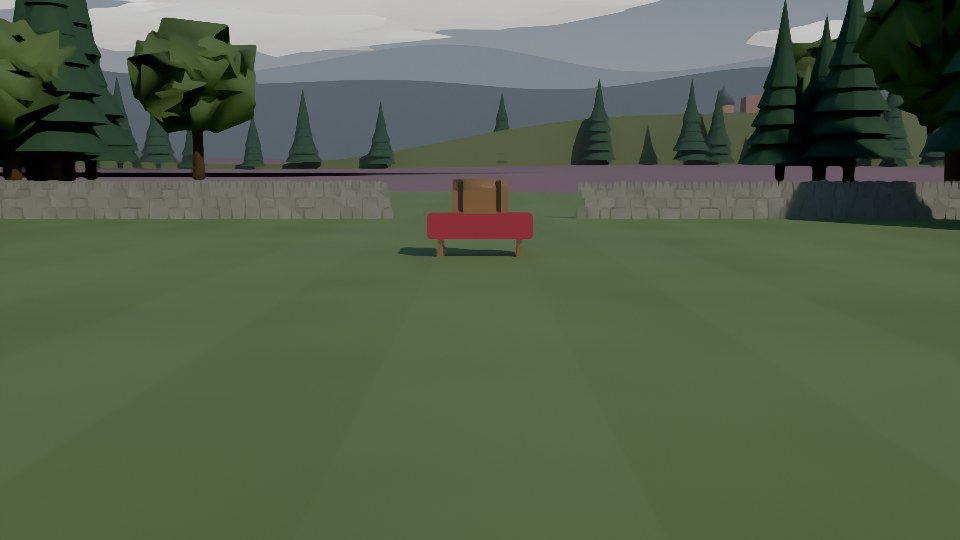

Which look for the sets?
Same room, three ways. The portraits on the stage are cartoon; the set should sit with them without looking like a toy.
The conclave

A. RealThe first render: photographic (what you called "too real").

B. Cel-shadedFlat bands of shade and ink outlines, like an animated series background. Currently live.

C. PaintedReal light, smoothed into brush strokes: a digital matte painting.
The mission field (early test, the geometry is still placeholder)

B. Cel-shadedReads as a low-poly game outdoors.

C. PaintedSofter, but the simple trees still show; outdoors needs proper trees and terrain in either style.